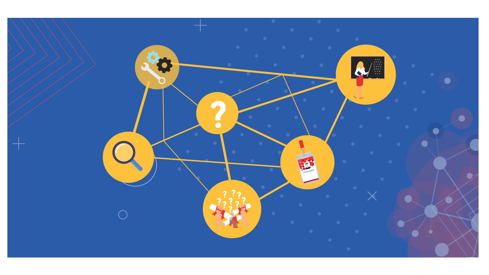

Neste processo de busca de afinidade profissional, inicialmente, não se trata de decidir, mas aprender o caminho para encontrar formações para qualquer escolha. Veja no infográfico a seguir, clicando em cada nó, algumas estratégias para você ajudar seus alunos no processo de escolha do campo ou curso profissional.
Ao longo de todo esse curso, nossa principal missão de educadores é provocar os jovens às suas escolhas e oferecer mecanismos e informações para que possam viabilizá-las. O podcast a seguir aborda um diálogo do Prof. Wollinger com dois estudantes que estão em dúvidas sobre a escolha de cursos profissionais, perceba, ao longo da conversa, como as estratégias que discutimos aqui podem ser aplicadas na mentoria com os alunos.